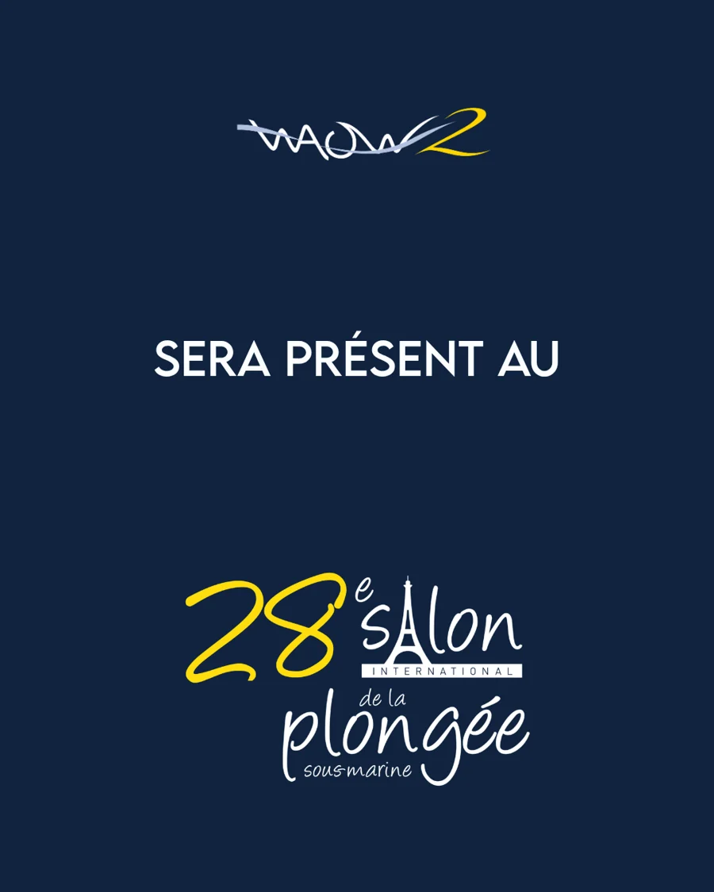
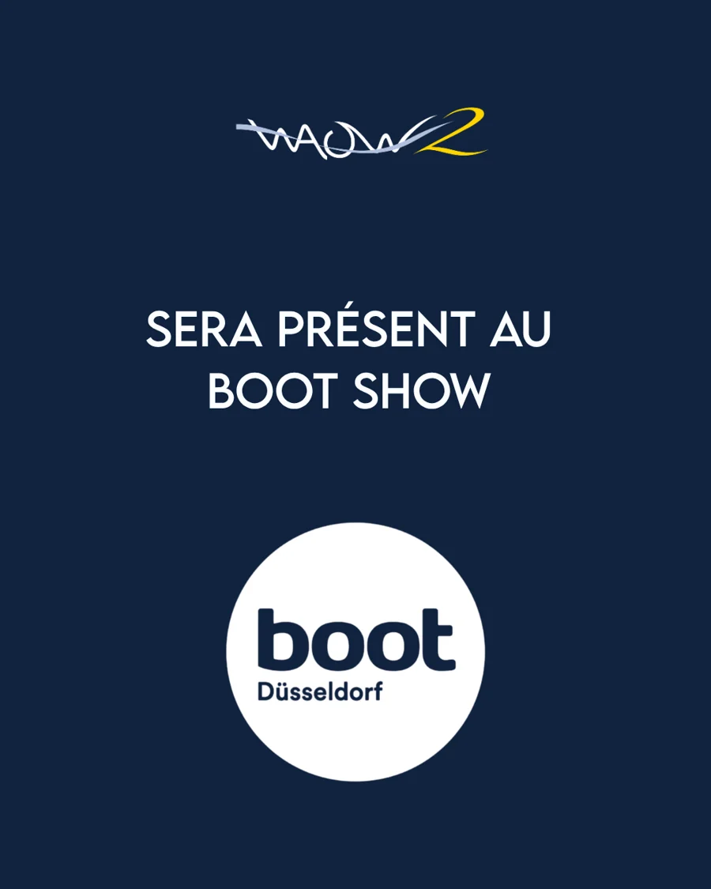

2026 - September
One year into the build.
A year ago, WAOW 2 was little more than a hull.
Today, her decks, cabins and living spaces are beginning to take shape.
Follow WAOW 2 as she takes shape.
From the first cut of wood to her first journey across Indonesia, follow the making of
WAOW 2 step by step.
Construction updates, stories from the shipyard, people behind the project, important
milestones, events and everything in between.


From January 14 to 17, 2027
From January 23 to 31, 2027
One year into the build.
A year ago, WAOW 2 was little more than a hull.
Today, her decks, cabins and living spaces are beginning to take shape.
Read the journal for August 2026.
The cabins, bulkheads and lower deck begin to take shape.
Joinery, wiring and the first fittings are going in.
Every week, the hull feels more like a home.
Read the journal for June 2026.
Read the journal for May 2026.
Read the journal for April 2026.
Stringers and decking take shape.
The hull starts to look like a boat.
Follow the current on the construction timeline.
Read the journal for February 2026.
Read the journal for January 2026.
Read the journal for December 2025.
Read the journal for November 2025.
Ribs are raised and the first planks go on.
One by one, by eye and experience.
The build begins in earnest.